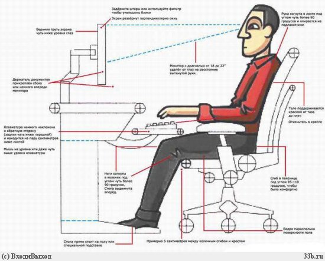
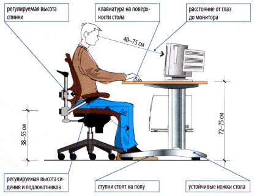

Положение тела за компьютером
Работа за компьютером — это, как правило, длительная сидячая работа в одной позе, что приводит к постоянной нагрузке на одни группы мышц и к постоянному её отсутствию на другие. Кроме того, в положении сидя, нагрузка на меж-позвонковые диски намного больше чем в положении стоя или лёжа. Поэтому очень важно иметь правильную позу при работе за компьютером.
- Ваша спина должна быть наклонена немного назад, всего на несколько градусов. Шея прямая. Такая поза позволяет разгрузить позвоночник и улучшить кровообращение в зоне между туловищем и бёдрами.
- Руки свободно опущены на подлокотники кресла. Локти и запястья расслаблены, угол сгиба в локтях 90 градусов. Кисти имеют общую ось с предплечьями: не сгибаются и не разгибаются. Работают только пальцы.
-
Бедра находятся под прямым углом к туловищу, колени - под прямым углом к бёдрам. Ноги твёрдо стоят на полу или на специальной подставке.
 